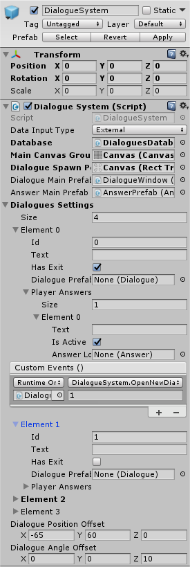
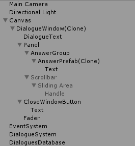

Dialogue System
Основное

Диалог создается через DialogueSystem, метод OpenNewDialogue(int dialogueID).
Warning
При создании нового диалога - предыдущий диалог не закрывается, а становится неактивным.
Для того, что бы закрыть текущий диалог используется метод CloseCurrentDialogue(), в классе DialogueSystem.
Также возможно закрыть все текущие открытые диалоги(в т.ч. неактивные). Для этого используется метод CloseAllDialogues(), в классе DialogueSystem.
Hierarchy

Data Input Type
Тип выбора данных(текстов) для диалогов:
- Direct - выборка данных из "Dialogues Settings".
- External - выборка данных из объекта Database.
Database
Объект типа "Database", из которого идет выборка данных для диалогов.
Note
При использовании ввода данных через XML-файл необходимо указывать корректные значения "Size" массива "AnswerSettings". XML-файл данных используется только для изменения значений "Text" в DialogueSettings и AnswerSettings.
XML Dialogues Database
XML_DialoguesDatabase
Main Canvas Group
Объект типа "Canvas Group".
Необходим для блокирования управления вне диалогового окна.
Dialogue Spawn Point
Объект типа "RectTransform".
Необходим для указания объкта, в котором будет происходить создание диалогового окна.
Если не задан, то по умолчанию устанавливается объект "Main Canvas Group".
Dialogue Main Prefab
Префаб диалогового окна типа "Dialogue".
Dialogue Window Prefab
Dialogue
Answer Main Prefab
Префаб кнопки ответа окна типа "Answer".
Answer Prefab
AnswerSettings
Answer
Dialogues Settings
Массив объектов типа "DialogueSettings".
Size - размер массива, количество диалогов.
DialogueSettings
Note
При использовании ввода данных через XML-файл необходимо указывать корректные значения "Size" массива "AnswerSettings". XML-файл данных используется только для изменения значений "Text" в DialogueSettings и AnswerSettings.
Dialogue Position Offset
Значения, на которые будет сдвинуто текущее диалоговое окно при открытии нового диалогового окна.
Dialogue Rotation Offset
Значения, на которые будет повернуто текущее диалоговое окно при открытии нового диалогового окна.